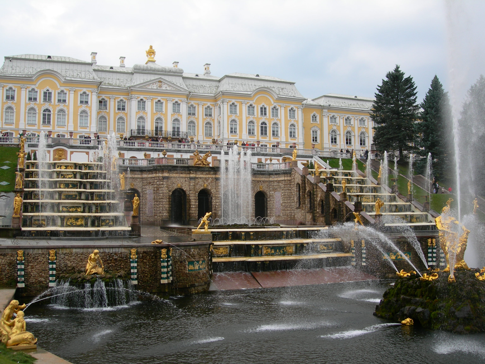
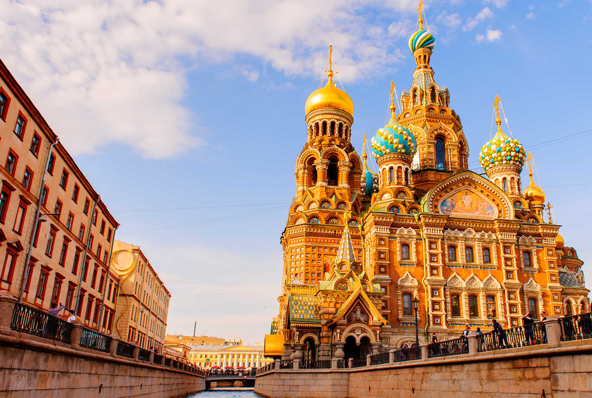
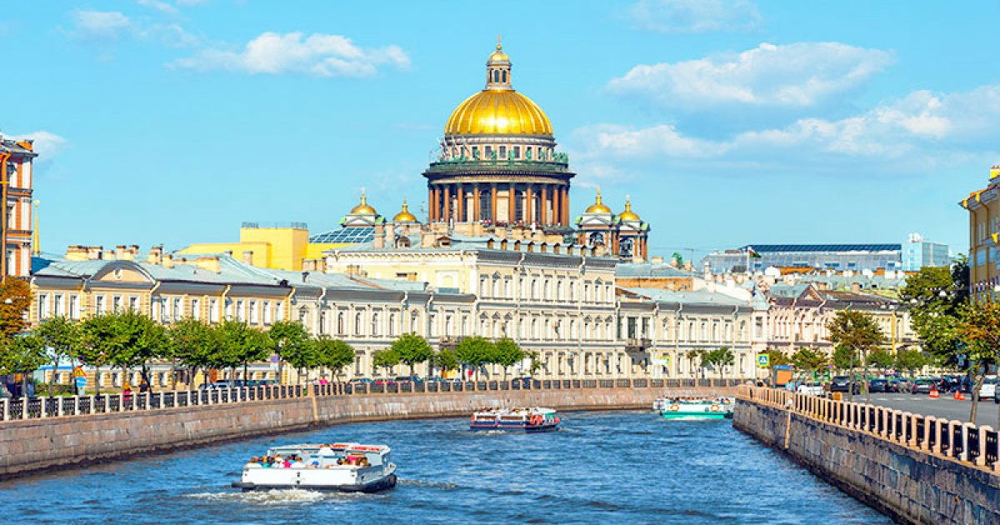
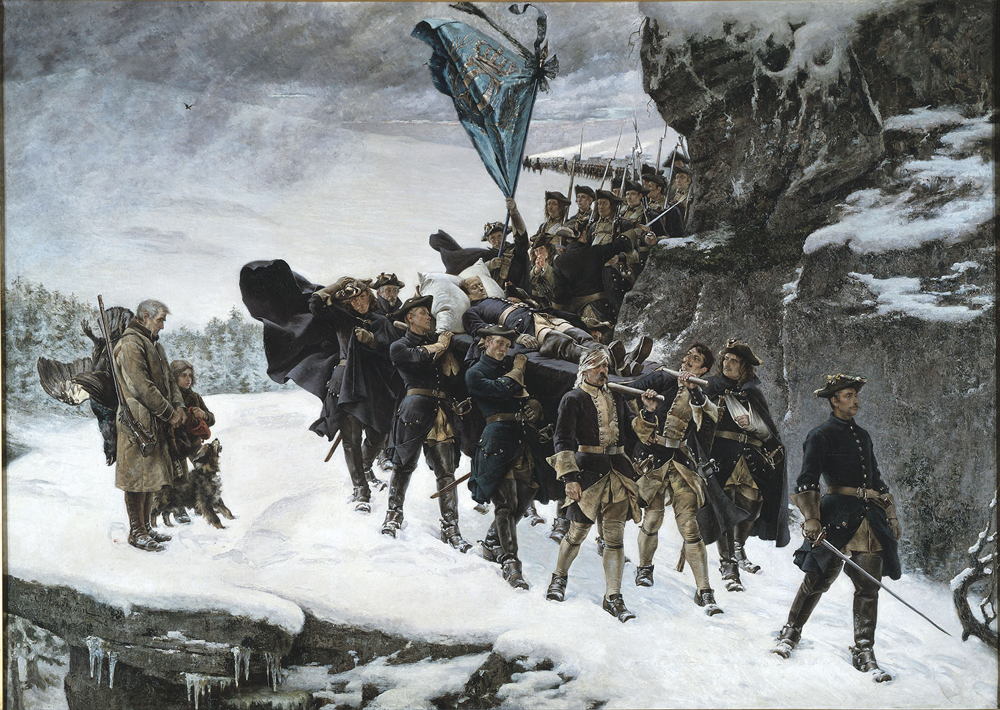

Esta pagina trata de una guia turistica de San Petersburgo.
Es la segunda ciudad mas poblada de Rusia
San Petersburgo es una ciudad con mucha historia que fue la capital del imperio ruso
Tambien es la capital del la "tercera Roma" y la casa de los zares
Actualmente es un centro cultural de Rusia
Fue fundada por el zar Pedro el Grande el 27 de mayo de 1703
El objetivo de su fundacion es corregir el estancamiento economico a traves del comercio maritimo
Despues de su fundación el zar Pedro movio forzosamente a personas para habitar la ciudad
Se convirtió en capital del Imperio ruso durante más de doscientos años
Rusia ha tenido varias guerras historicas con Suecia y Finlandia no tener la ciudad tan cerca de sus paises vecionos
Durante la era Sovietica la ciudad paso a llamarse Leningrado
La construcción de la ciudad viene de la necesidad que el zar –que llevó a cabo una radical reforma y occidentalización de su reino– tenía de un puerto en el mar Báltico que pudiera ser utilizado durante todo el año
Los habitantes de San Petersburgo les gusta contar la historia de que su hermosa ciudad no se construyó en la tierra. Sus nobles edificios, palacios, elegantes plazas y hermosas iglesias con airosas cúpulas fueron construidas en el cielo. Cuando todo estuvo terminado por celestiales manos, se depositó la ciudad sobre las pantanosas tierras de la desembocadura del río Neva. No esta mal el cuento, es la versión rusa del «Madrid al cielo y el el cielo un agujero para ver Madrid». La realidad de la construcción de la ciudad viene de la necesidad que el zar Pedro I –que llevó a cabo una radical reforma y occidentalización de su reino– tenía de un puerto en el mar Báltico que pudiera ser utilizado durante todo el año ( el único puerto que tenían entonces era el de la ciudad de Arkangel que estaba cerrado por los hielos durante la mitad del año). Esta se unía con otra de las obsesiones del poderoso autócrata de todas las rusias: la creación de una importante marina mercante y de guerra.
La Gran Guerra el Norte (1700 – 1721) que enfrentaría al Imperio sueco contra una coalición de príncipes alemanes, Dinamarca, Polonia y Rusia, se inició en el año 1700. Pedro I inició ofensivas para adquirir salidas al mar. En 1702 obligó a los suecos a retirarse de las inmediaciones del lago Ladoga (el mayor lago de Europa) que era el origen del río Neva. Al año siguiente ocupó la desembocadura de este río e, inmediatamente, inicio la construcción de una ciudad a la que daría su nombre: San Petersburgo. La ciudad combinaría el hecho de ser una creación suya, un puerto comercial y militar y una nueva capitalidad alejándose de la odiada ciudad de Moscú, cargada de malos recuerdos para él.
La nueva ciudad creció rápidamente –un informe, muy exagerado, de 1714 hablaba de 34.00 edificios– y se expandió por otras islas fuera del núcleo fundacional de la isla de Petrogrado. El Neva, de apenas 74 kilómetros de longitud es el tercer río más caudaloso de Europa. Sus aguas fluyen con fuerza y rapidez desembocando en el Báltico, pero no se consideraban un obstáculo insalvable para la construcción de puentes que unieran las diferentes islas de la desembocadura. Pero el zar se negó en rotundo. Pedro I quería que sus súbditos aprendieran a navegar por lo que prohibió la construcción de puentes y organizó un sistema de transbordo con naves a vela. Nada de remos, los rusos tenían que acostumbrarse al manejo de las artes marineras. La tarea del manejo de unas artes extrañas a la inmensa mayoría de los rusos, las difíciles aguas del río que bajaba con gran fuerza y velocidad, los bloques de hielo que se formaban y eran arrastrados por las aguas durante la estación fría, todo ello contribuyó a que se produjera un notable índice de accidentes. Pedro I se dio cuenta de que no había sido una buena idea cuando, en algo más de una semana, perecieron ahogados en diferentes accidentes: el embajador de Polonia, un general del ejército ruso y uno de los médicos personales del propio zar. Inmediatamente rectificó, cambió las velas por remos en las barcas de transbordo y autorizó los proyectos para la construcción de puentes.